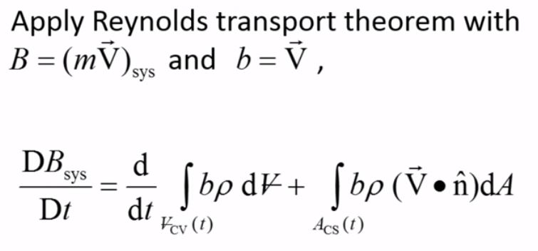
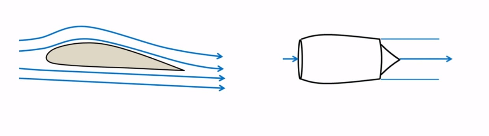
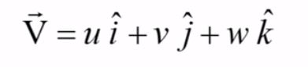
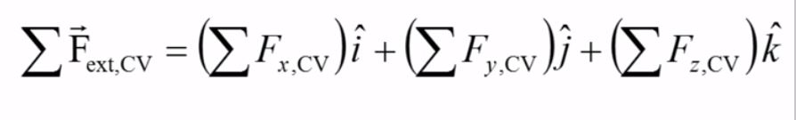
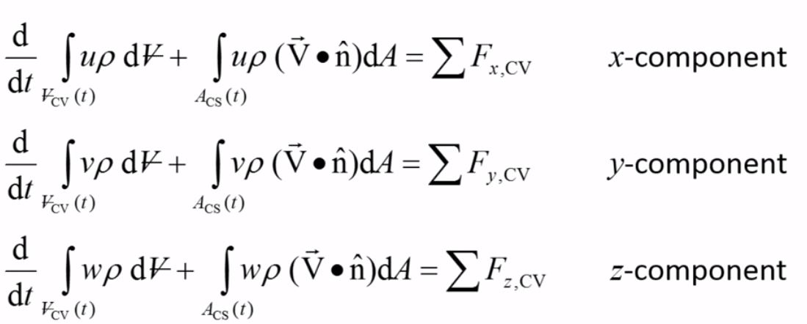

Momentum Conservation
- In Reynold's transport theorem, we take the extensive property to be Momentum.
- 
- A fluid system's linear momentum can be changed by applying an external force.
- Many devices like airplane wings, jet engines, turbines etc are designed to change a
a fluid's momentum to produce a desirable effect.
- 
- according to the conservation of linear momentum equation, the time rate of change of linear
momentum for a system is equal to the vector sum of all the external forces acting on it.
-
So, Reynold's transport theorem for momentum conservation becomes:

- The first term on the LHS represents the time rate of change of momentum within the
control volume, and the second term on the LHS represents the net flux of linear momentum
through the control surface due to mass flow.
-
The RHS represents the vector sum of all external forces acting on the control volume.
- This equation is a vector equation.
- The LHS has velocity vectors which can be written as vector sum of of 3 components.
- 
- Similarly, the RHS has force vector which contains 3 components.
- 
-
By breaking up the velocity and force vectors into their X, Y, and Z components,
the vector equation of momentum conservation can be written as 3 scalar equations.
- 